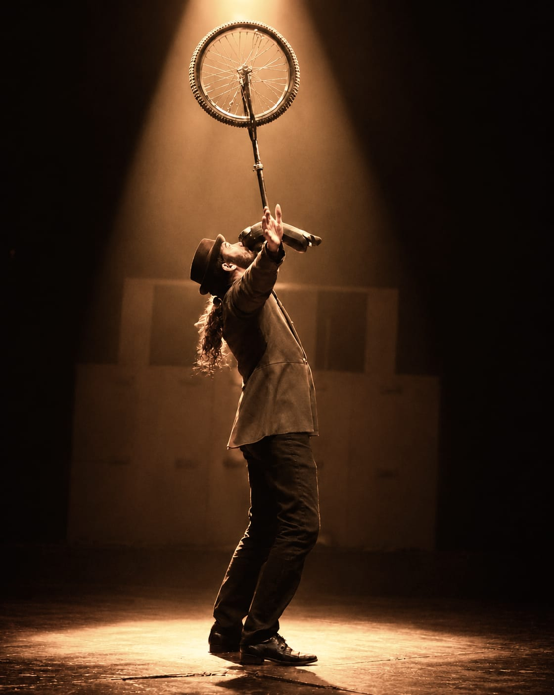
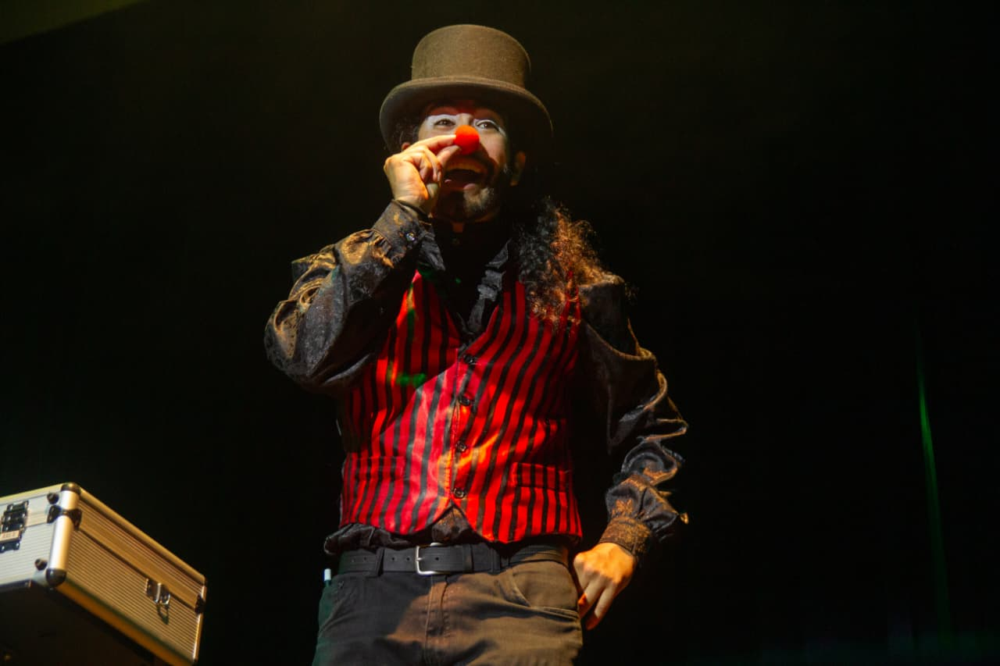

✦ UMA EXPERIÊNCIA INESQUECÍVEL ✦
Marcos Lira
O extraordinário diante dos seus olhos
Ator, palhaço e mágico, Marcos Lira une ilusionismo, malabarismo e monociclo em um espetáculo leve, divertido e interativo, criado para encantar crianças e adultos.

✦ DESDE 2017✦ SOBRE O ARTISTA ✦
Da cena para a magia
Marcos Lira começou sua jornada artística em 2017, quando se apaixonou pelo teatro e pelas artes da cena. Logo começou a estudar palhaçaria, e o circo também passou a ocupar um lugar no seu coração. Além de palhaço e ator, Marcos tornou-se malabarista, equilibrista — monociclista — e mágico!
Durante o show de mágica, Marcos busca envolver a plateia com números clássicos e contemporâneos, sempre com bom humor e leveza. A participação do público é imprescindível, tanto das crianças quanto dos adultos, promovendo momentos de alegria para toda a família.
O show também conta com números de malabarismo e monociclo, tornando o espetáculo mais diversificado e trazendo uma verdadeira atmosfera de picadeiro. Para levar um artista técnico, habilidoso, simpático e divertido ao seu evento, entre em contato.
✦ O QUE DIZEM ✦
Depoimentos
Muito talento, criatividade e dedicação em cada número apresentado. A interação com o público, a expressão artística e a execução das performances prenderam a atenção do início ao fim. Tudo foi pensado e apresentado para criar uma experiência mágica e emocionante. Parabéns pelo profissionalismo, pela energia contagiante e pelo excelente trabalho realizado! Foi uma apresentação que transmitiu alegria, emoção e admiração a todos que estavam presentes!
A gente amou tudo, de verdade. Ficamos conversando depois do aniversário, quando a galera foi embora, e ficamos por horas falando do show, kkkkk. Adoramos de verdade!
Quer um show que vá além do esperado? Esse é o artista que você precisa! Tenho 200 alunos na minha escola! Foi a maior alegria ver os rostinhos atentos, surpresos e alegres. Se tiverem qualquer dúvida quanto a contratar ou não, podem entrar em contato comigo. Tem pessoas como ele que merecem toda a ajuda para ter a oportunidade de mostrar o seu trabalho.
Ele abrilhantou nosso quintal com sua arte! Uma festinha intimista, os adultos se permitindo curtir o agora, o momento. Arrasou! Muito obrigada.
✦ GALERIA ✦
Momentos em cena
✦ FALE CONOSCO ✦
Vamos criar algo mágico?
Seu evento merece mais do que uma atração — merece um momento que todos vão lembrar. Conte um pouco sobre a ocasião e leve magia, humor e encantamento para crianças e adultos.
✦ INFORMAÇÕES ✦